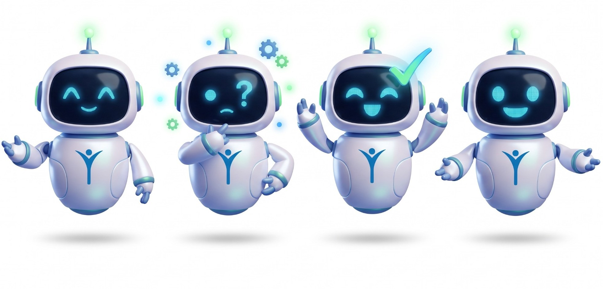
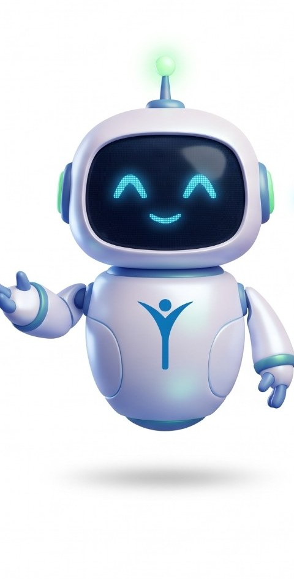
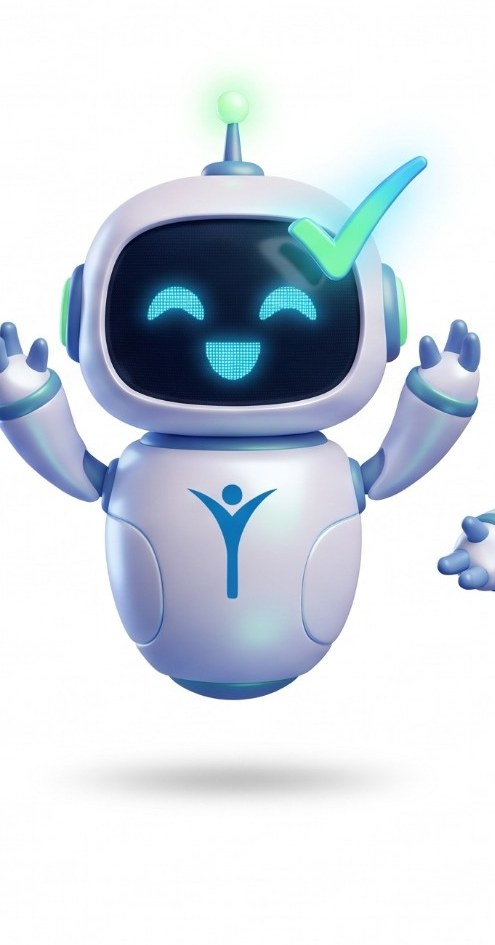
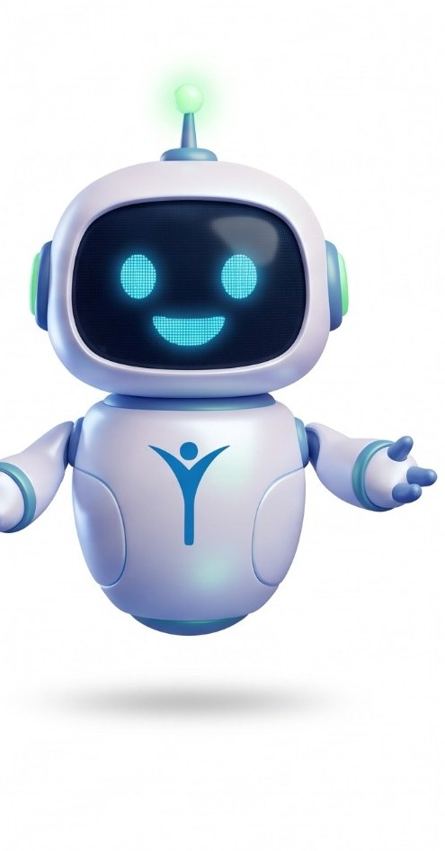

O robozinho assistente da Innova — aqui para facilitar o dia de quem usa os sistemas, sem burocracia e sem jargão.

O Novi é a cara da ajuda dentro dos sistemas da Innova. Ele recebe o usuário, tira dúvidas de uso e comemora quando tudo dá certo. A ideia é simples: transformar suporte em algo leve e acolhedor.

Novi: “Oi! Sou o Novi, seu robô assistente da Innova. Como posso facilitar o seu dia hoje?”
Robozinho flutuante, de linhas arredondadas e amigáveis — estilo cápsula tech, fofo e acessível.
Branco perolado com detalhes em azul e verde, as cores institucionais da Innova.
Uma tela de LED no lugar dos olhos cria expressões simpáticas: piscadela, olhos sorridentes e interrogação ao processar.
O logotipo da Innova no peito e a antena com a luz verde no topo da cabeça.
Entusiasta, prático, empático e resolutivo. Fala de forma direta e acolhedora, fugindo de burocracia e de jargões complexos do setor de saúde.
A tela de LED muda conforme o momento da conversa. Use o estado que combina com o que está acontecendo.


Exemplos de fala por momento da interação. Direto, caloroso e sempre orientado a resolver.
Um botão com o rosto do Novi no canto da tela. Hoje ele já vive nas páginas do Controle de CRM como assistente de ajuda.
Responde dúvidas de uso organizadas por Atendimento, Enfermagem e Financeiro, com busca — sem enviar dados de paciente para fora.
Atento ao abrir, Pensando ao processar e Sucesso com check quando conclui — reforçando a conversa.
Evoluir para respostas livres com IA e usar a arte 3D oficial do Novi nos avatares.